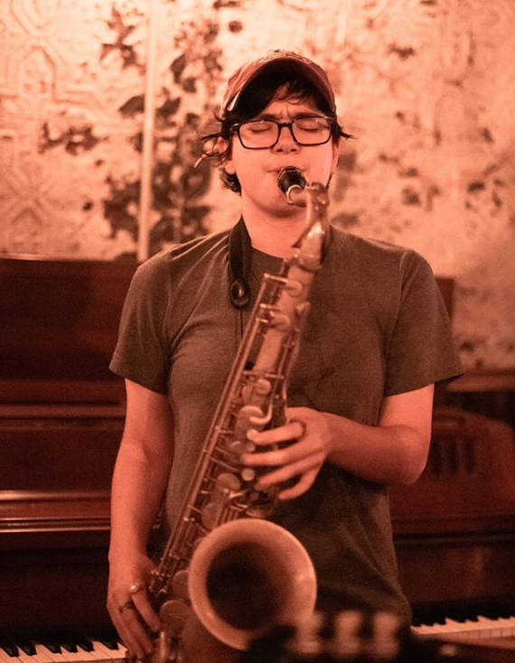

Emma Raskin Waddell

Emma Waddell is a tenor saxophonist based in NYC. She plays and arranges for jazz groups in the city, including the Ron McClure Ensemble at NYU and the Kevin Blanq Big Band that performs at Swing 46. In high school she was a member of the Jazz at Lincoln Center Youth Orchestra and went on tour with them to London. She is also a recipient of multiple Downbeat awards for various big bands she has been a member of, and performs and records often with rock and pop groups in NYC.
She can play tenor sax, clarinet, flute, and piano in rock or jazz styles and has teaching experience on all of them. She also has extensive knowledge of jazz theory. She has studied with saxophonists Mike Casey, Ted Nash, Victor Goines, Kris Allen, Lauren Sevian and other musicians like Marcus Printup, Ron McClure, James Burton III, and Tatum Greenblatt. She studied jazz performance, musicology, and computer science at NYU Gallatin.